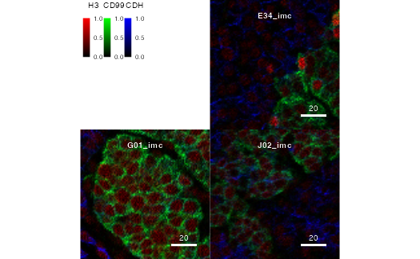
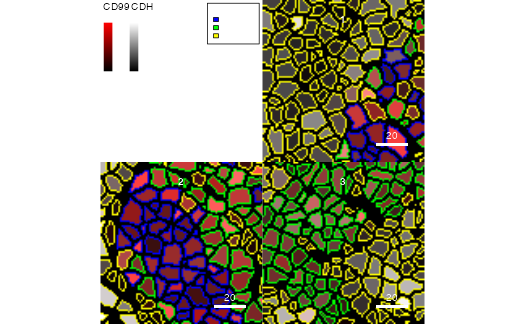

Visualization of imaging cytometry data in R
Nils Eling
Department for Quantitative Biomedicine, University of Zurichnils.eling@dqbm.uzh.ch
Nicolas Damond
Department for Quantitative Biomedicine, University of Zurichnicolas.damond@dqbm.uzh.ch
Tobias Hoch
Department for Quantitative Biomedicine, University of Zurichtobias.hoch@dqbm.uzh.ch
18 January 2022
Source:vignettes/cytomapper.Rmd
cytomapper.RmdAbstract
Highly multiplexed imaging cytometry acquires the single-cell expression of selected proteins in a spatially-resolved fashion. These measurements can be visualized across multiple length-scales. First, pixel-level intensities represent the spatial distributions of feature expression with highest resolution. Second, after segmentation, expression values or cell-level metadata (e.g. cell-type information) can be visualized on segmented cell areas. This package contains functions for the visualization of multiplexed read-outs and cell-level information obtained by multiplexed imaging cytometry. The main functions of this package allow 1. the visualization of pixel-level information across multiple channels and 2. the display of cell-level information (expression and/or metadata) on segmentation masks.
Introduction
This vignette gives an introduction to displaying highly-multiplexed imaging cytometry data with the cytomapper package. As an example, these instructions display imaging mass cytometry (IMC) data. However, other imaging cytometry approaches including multiplexed ion beam imaging (MIBI) (Angelo et al. 2014), tissue-based cyclic immunofluorescence (t-CyCIF) (Lin et al. 2018) and iterative indirect immunofluorescence imaging (4i) (Gut, Herrmann, and Pelkmans 2018), which produce pixel-level intensities and optionally segmentation masks can be displayed using cytomapper.
IMC (Giesen et al. 2014) is a multiplexed imaging cytometry approach to measure spatial protein abundance. In IMC, tissue sections are stained with a mix of around 40 metal-conjugated antibodies prior to laser ablation with \(1\mu{}m\) resolution. The ablated material is transferred to a mass cytometer for time-of-flight detection of the metal ions (Giesen et al. 2014)(Mavropoulos et al., n.d.). In that way, hundreds of images (usually with an image size of around 1mm x 1mm) can be generated in a reasonable amount of time (Damond et al. 2019).
Raw IMC data are computationally processed using a segmentation pipeline (available at https://github.com/BodenmillerGroup/ImcSegmentationPipeline). This pipeline produces image stacks containing the raw pixel values for up to 40 channels, segmentation masks containing the segmented cells, cell-level expression and metadata information as well as a number of image-level meta information.
Cell-level expression and metadata can be processed and read into a SingleCellExperiment class object. For more information on the SingleCellExperiment object and how to create it, please see the SingleCellExperiment package and the Orchestrating Single-Cell Analysis with Bioconductor workflow. Furthermore, the cytomapper package provides the measureObjects function that generates a SingleCellExperiment based on segmentation masks and multi-channel images.
The cytomapper package provides a new CytoImageList class as a container for multiplexed images or segmentation masks. For more information on this class, refer to the CytoImageList section.
The main functions of this package include plotCells and plotPixels. The plotCells function requires the following object inputs to display cell-level information (expression and metadata):
- a
SingleCellExperimentobject, which contains the cells’ counts and metadata - a
CytoImageListobject containing the segmentation masks
The plotPixels function requires the following object inputs to display pixel-level expression information:
- a
CytoImageListobject containing the pixel-level information per channel - (optionally) a
SingleCellExperimentobject, which contains the cells’ counts and metadata - (optionally) a
CytoImageListobject containing the segmentation masks
Quick start
The following section provides a quick example highlighting the functionality of cytomapper. For detailed information on reading in the data, refer to the Reading in data section. More information on the required data format is provided in the Data formats section. In the first step, we will read in the provided toy dataset
The CytoImageList object containing pixel-level intensities representing the ion counts for five proteins can be displayed using the plotPixels function:
plotPixels(image = pancreasImages, colour_by = c("H3", "CD99", "CDH"))For more details on image normalization, cell outlining, and other pixel-level manipulations, refer to the Plotting pixel information section.
The CytoImageList object containing segmentation masks, which represent cell areas on the image can be displayed using the plotCells function. Only the segmentation masks are plotted when no other parameters are specified.
To colour and/or outline segmentation masks, a SingleCellExperiment, an img_id and cell_id entry need to be specified:
plotCells(mask = pancreasMasks, object = pancreasSCE,
cell_id = "CellNb", img_id = "ImageNb", colour_by = "CD99",
outline_by = "CellType")
plotCells(mask = pancreasMasks, object = pancreasSCE,
cell_id = "CellNb", img_id = "ImageNb",
colour_by = "CellType")
For more information on the data formats and requirements, refer to the following section. More details on the plotCells function are provided in the Plotting cell information section. Also refer to the measureObjects function to generate a SingleCellExperiment directly from the images.
Data formats
The cytomapper package combines objects of the SingleCellExperiment class and the CytoImageList class (provided in cytomapper) to visualize cell- and pixel-level information.
In the main functions of the package, image refers to a CytoImageList object containing one or multiple multi-channel images where each channel represents the pixel-intensity of one selected marker (proteins in the case of IMC). The entry mask refers to a CytoImageList object containing one or multiple segmentation masks. Segmentation masks are defined as one-channel images containing integer values, which represent the cells’ ids or 0 (background). Finally, the object entry refers to a SingleCellExperiment class object that contains cell-specific expression values (in the assay slots) and cell-specific metadata in the colData slot.
To link information between the SingleCellExperiment and CytoImageList objects, two slots need to be specified:
-
img_id: a single character indicating thecolData(in theSingleCellExperimentobject) andelementMetadata(in theCytoImageListobject) entry that contains the image identifiers. These image ids have to match between theSingleCellExperimentobject and theCytoImageListobject. -
cell_id: a single character indicating thecolDataentry that contains the cell identifiers. These should be integer values corresponding to pixel-values in the segmentation masks.
The img_id and cell_id entry in the SingleCellExperiment object need to be accessible via:
head(colData(pancreasSCE)[,"ImageNb"])## [1] 1 1 1 1 1 1
head(colData(pancreasSCE)[,"CellNb"])## [1] 824 835 839 844 847 853The img_id entry in the CytoImageList object need to be accessible via:
mcols(pancreasImages)[,"ImageNb"]## [1] 1 2 3
mcols(pancreasMasks)[,"ImageNb"]## [1] 1 2 3For more information on the CytoImageList class, please refer to the section The CytoImageList object. For more information on the SingleCellExperiment object and how to create it, please see the SingleCellExperiment package and the Orchestrating Single-Cell Analysis with Bioconductor workflow.
The provided toy dataset
For visualization purposes, the cytomapper package provides a toy dataset containing 3 images of \(100\mu{m}\) x \(100\mu{m}\) dimensions (100 x 100 pixels). The dataset contains 362 segmented cells and the expression values for 5 proteins: H3, CD99, PIN, CD8a, and CDH It represents a small subset of the data presented in A Map of Human Type 1 Diabetes Progression by Imaging Mass Cytometry.
This dataset was generated using imaging mass cytometry (Giesen et al. 2014). Raw output files (in .mcd format) were processed using the IMC segmentation pipeline, which produces tiff-stacks containing the pixel-level information of all measured markers, segmentation masks that contain the cells’ object ids as well as cell- and image-specific measurements. Cell-specific measurements include the mean marker intensity per cell and per marker, the cells’ position and size measurements.
Pixel-level intensities for all 5 markers (5 channels) are stored in the pancreasImages object. Entries to the CytoImageList object and the rownames of elementMetadata match: E34_imc, G01_imc, and J02_imc. The elementMetadata slot (accesible via the mcols() function) contains the image identifiers.
pancreasImages## CytoImageList containing 3 image(s)
## names(3): E34_imc G01_imc J02_imc
## Each image contains 5 channel(s)
## channelNames(5): H3 CD99 PIN CD8a CDH
mcols(pancreasImages)## DataFrame with 3 rows and 2 columns
## ImageName ImageNb
## <character> <integer>
## E34_imc E34 1
## G01_imc G01 2
## J02_imc J02 3
channelNames(pancreasImages)## [1] "H3" "CD99" "PIN" "CD8a" "CDH"
imageData(pancreasImages[[1]])[1:15,1:5,1]## [,1] [,2] [,3] [,4] [,5]
## [1,] 2.235787e+00 0.2537275 1.269632e+00 9.991982e-01 1.990020e+00
## [2,] 2.885528e+00 1.9900196 2.264642e+00 0.000000e+00 1.410924e+00
## [3,] 3.400943e+00 0.9950098 9.950098e-01 2.180066e+00 4.152935e-17
## [4,] 3.223832e+00 3.1750760 1.128341e+00 4.486604e+00 7.371460e-16
## [5,] 9.987666e-01 1.9900196 2.644036e-15 0.000000e+00 0.000000e+00
## [6,] 7.094598e-17 2.9412489 2.985029e+00 1.990020e+00 9.950098e-01
## [7,] 2.149031e-16 0.0000000 9.950098e-01 5.537247e-16 0.000000e+00
## [8,] 3.936259e+00 0.0000000 4.269442e-15 1.240777e+00 2.630806e+00
## [9,] 9.987666e-01 1.6437560 3.625816e+00 0.000000e+00 2.123351e+00
## [10,] 1.401616e-16 1.9900196 2.941249e+00 3.090500e+00 0.000000e+00
## [11,] 1.382069e+00 3.0258245 4.481710e-16 0.000000e+00 1.946239e+00
## [12,] 4.239594e+00 2.7720971 9.136457e-16 4.677541e+00 4.118345e+00
## [13,] 2.687521e+00 0.0000000 5.149176e+00 9.988809e-01 4.677541e+00
## [14,] 4.513364e+00 1.4666444 9.950098e-01 2.828813e+00 2.772097e+00
## [15,] 1.999239e+00 2.4616542 3.999584e+00 1.484527e+01 1.225784e+01The corresponding segmentation masks are stored in the pancreasMasks object and can be read in from tiff images containing the segmentation masks (see next section). Segmentation masks are defined as one-channel images containing integer values, which represent the cells’ ids or 0 (background).
pancreasMasks## CytoImageList containing 3 image(s)
## names(3): E34_mask G01_mask J02_mask
## Each image contains 1 channel
mcols(pancreasMasks)## DataFrame with 3 rows and 2 columns
## ImageName ImageNb
## <character> <integer>
## E34_mask E34 1
## G01_mask G01 2
## J02_mask J02 3
imageData(pancreasMasks[[1]])[1:15,1:5]## [,1] [,2] [,3] [,4] [,5]
## [1,] 824 824 824 824 0
## [2,] 824 824 824 824 0
## [3,] 824 824 824 824 0
## [4,] 824 824 824 824 824
## [5,] 824 824 824 824 824
## [6,] 824 824 824 824 824
## [7,] 824 824 824 824 824
## [8,] 824 824 824 824 824
## [9,] 824 824 824 824 824
## [10,] 824 824 824 824 0
## [11,] 824 824 824 0 0
## [12,] 824 824 0 0 0
## [13,] 0 0 0 0 864
## [14,] 0 0 0 864 864
## [15,] 0 864 864 864 864The IMC segmentation pipeline also generates cell-specific measurements. The SingleCellExperiment class offers an ideal container to store cell-specific expression counts together with cell-specific metadata. For the toy dataset, cell-specific mean marker intensities (counts) and arcsinh-transformed mean marker intensities (exprs) are stored in the assays(pancreasSCE) slot. All cell-specific metadata are stored in the colData slot of the corresponding SingleCellExperiment object: pancreasSCE. For more information on the metadata, please refer to the ?pancreasSCE documentation. Of note: the cell-type labels contained in the colData(pancreasSCE)$CellType slot are arbitrary and only partly represent biologically relevant cell-types.
pancreasSCE## class: SingleCellExperiment
## dim: 5 362
## metadata(0):
## assays(2): counts exprs
## rownames(5): H3 CD99 PIN CD8a CDH
## rowData names(4): MetalTag Target clean_Target frame
## colnames(362): E34_824 E34_835 ... J02_4190 J02_4209
## colData names(9): ImageName Pos_X ... MaskName Pattern
## reducedDimNames(0):
## mainExpName: NULL
## altExpNames(0):
names(colData(pancreasSCE))## [1] "ImageName" "Pos_X" "Pos_Y" "Area" "CellType" "ImageNb"
## [7] "CellNb" "MaskName" "Pattern"The pancreasSCE object also contains further information on the measured proteins via the rowData(pancreasSCE) slot. Furthermore, the pancreasSCE object contains the raw expression counts per cell in the form of mean pixel value per cell and protein (accessible via counts(pancreasSCE)). The arcsinh-transformed (using a co-factor of 1) raw expression counts can be obtained via assay(pancreasSCE, "exprs").
For more information on how to generate SingleCellExperiment objects from count-based data, see Orchestrating Single-Cell Analysis with Bioconductor.
Reading in data
The cytomapper package provides the loadImages function to conveniently read images into a CytoImageList object.
Load images
The loadImages function returns a CytoImageList object containing the multi-channel images or segmentation masks. Refer to the ?loadImages function to see the full functionality.
As an example, we will read in multi-channel images and segmentation masks provided by the cytomapper package.
# Read in masks
path.to.images <- system.file("extdata", package = "cytomapper")
all_masks <- loadImages(path.to.images, pattern = "_mask.tiff")
all_masks## CytoImageList containing 3 image(s)
## names(3): E34_mask G01_mask J02_mask
## Each image contains 1 channel
# Read in images
all_stacks <- loadImages(path.to.images, pattern = "_imc.tiff")
all_stacks## CytoImageList containing 3 image(s)
## names(3): E34_imc G01_imc J02_imc
## Each image contains 5 channel(s)Add metadata
To link images between the two CytoImageList objects and the corresponding SingleCellExperiment object, the image ids need to be added to the elementMetadata slot of the CytoImageList objects. From the experimental setup, we know that the image named ‘E34_imc’ has image id ‘1’, G01_imc has id ‘2’, J02_imc has id ‘3’.
unique(pancreasSCE$ImageNb)## [1] 1 2 3Scale images
We can see that, in some cases, the pixel-values are not correctly scaled by the image encoding. The segmentation masks should only contain integer entries:
head(unique(as.numeric(all_masks[[1]])))## [1] 0.01257343 0.00000000 0.01318379 0.01310750 0.01287861 0.01280232The provided data was processed using CellProfiler (Carpenter et al. 2006). By default, CellProfiler scales all pixel intensities between 0 and 1. This is done by dividing each count by the maximum possible intensity value (see MeasureObjectIntensity for more info). In the case of 16-bit encoding (where 0 is a valid intensity), this scaling value is 2^16-1 = 65535. Therefore, pixel-intensites need to be rescaled by this value. However, this scaling value can change and different images can be scaled by different factors. The user needs make sure to select the correct factors in more complex cases.
The cytomapper package provides a ?scaleImages function. The user needs to manually scale images to obtain the correct pixel-values. Here, we scale the segmentation masks by the factor for 16-bit encoding: 2^16-1
all_masks <- scaleImages(all_masks, 2^16-1)
head(unique(as.numeric(all_masks[[1]])))## [1] 824 0 864 859 844 839Alternatively, the as.is parameter can be set to TRUE to attempt image scaling while reading in the images:
all_masks_2 <- loadImages(path.to.images, pattern = "_mask.tiff", as.is = TRUE)
head(unique(as.numeric(all_masks_2[[1]])))## [1] 824 0 864 859 844 839However, care needs to be taken and masks and images need to be checked if they are correctly imported.
For this toy dataset, the multi-channel images are not affected by this scaling factor. The final all_masks object corresponds to the pancreasMasks object provided by cytomapper.
Add channel names
To access the correct images in the multi-channel CytoImageList object, the user needs to set the correct channel names. For this, the cytomapper package provides the ?channelNames getter and setter function:
channelNames(all_stacks) <- c("H3", "CD99", "PIN", "CD8a", "CDH")The read-in data can now be used for visualization as explained in the Quick start section.
Generating the SingleCellExperiment object
Based on the processed segmentation masks and multi-channel images, cytomapper can be used to measure cell-specific intensities and morphological features. These features are stored in form of a SingleCellExperiment object:
sce <- measureObjects(all_masks, all_stacks, img_id = "ImageNb")
sce## class: SingleCellExperiment
## dim: 5 362
## metadata(0):
## assays(1): counts
## rownames(5): H3 CD99 PIN CD8a CDH
## rowData names(0):
## colnames: NULL
## colData names(8): ImageNb object_id ... m.majoraxis m.eccentricity
## reducedDimNames(0):
## mainExpName: NULL
## altExpNames(0):By default, the mean intensities per cell and channel are stored in counts(sce) while all other morphological features are stored in colData(sce):
counts(sce)[1:5, 1:5]## [,1] [,2] [,3] [,4] [,5]
## H3 1.50068681 12.7160872 2.16352437 4.6660460 3.4569734
## CD99 1.30339721 0.7676006 2.48035219 1.4353548 0.8031506
## PIN 0.03636109 0.3255984 0.07762631 0.1730306 0.2478255
## CD8a 0.20264913 0.0000000 0.28294494 0.5511711 0.1217455
## CDH 11.42480015 3.8496665 19.80123812 13.1796503 11.7225806
colData(sce)## DataFrame with 362 rows and 8 columns
## ImageNb object_id s.area s.radius.mean m.cx m.cy
## <character> <numeric> <numeric> <numeric> <numeric> <numeric>
## 1 1 824 55 3.93042 6.21818 2.96364
## 2 1 835 9 1.67054 94.44444 1.22222
## 3 1 839 17 2.47994 46.23529 1.70588
## 4 1 844 13 2.31966 33.92308 1.30769
## 5 1 847 87 4.92717 83.41379 4.66667
## ... ... ... ... ... ... ...
## 358 3 4165 10 1.34998 35.3000 99.0000
## 359 3 4167 34 3.09718 52.0882 98.7647
## 360 3 4173 1 0.00000 1.0000 100.0000
## 361 3 4190 2 0.50000 21.5000 100.0000
## 362 3 4209 12 1.60132 79.5000 99.3333
## m.majoraxis m.eccentricity
## <numeric> <numeric>
## 1 12.17659 0.863513
## 2 8.28709 0.985034
## 3 10.59886 0.977839
## 4 11.03438 0.985930
## 5 13.14283 0.570827
## ... ... ...
## 358 4.08496 0.514302
## 359 11.07958 0.932569
## 360 0.00000 0.000000
## 361 2.00000 1.000000
## 362 5.53775 0.842701The CytoImageList object
The cytomapper package provides a new CytoImageList class, which inherits from the SimpleList class. Each entry to the CytoImageList object is an Image class object defined in the EBImage package. A CytoImageList object is restricted to the following entries:
- all images need to have the same number of channels
- the order/naming of channels need to be the same across all images
- entries to the
CytoImageListobject need to be uniquely named - names of
CytoImageListobject can either beNULLor should not containNAor empty entries - only grayscale images are supported (see
?Imagefor more information) - channels names do not support duplicated entries
CytoImageList objects that contain masks should only contain a single channel
The following paragraphs will explain further details on manipulating CytoImageList objects
Accessors
All accessor functions defined for SimpleList also work on CytoImageList class objects. Element-wise metadata — in the case of the CytoImageList object these are image-specific metadata — are saved in the elementMetadata slot. This slot can be accessed via the mcols() function:
mcols(pancreasImages)## DataFrame with 3 rows and 2 columns
## ImageName ImageNb
## <character> <integer>
## E34_imc E34 1
## G01_imc G01 2
## J02_imc J02 3
mcols(pancreasImages)$PatientID <- c("Patient1", "Patient2", "Patient3")
mcols(pancreasImages)## DataFrame with 3 rows and 3 columns
## ImageName ImageNb PatientID
## <character> <integer> <character>
## E34_imc E34 1 Patient1
## G01_imc G01 2 Patient2
## J02_imc J02 3 Patient3Subsetting a CytoImageList object works similar to a SimpleList object:
pancreasImages[1]## CytoImageList containing 1 image(s)
## names(1): E34_imc
## Each image contains 5 channel(s)
## channelNames(5): H3 CD99 PIN CD8a CDH
pancreasImages[[1]]## Image
## colorMode : Grayscale
## storage.mode : double
## dim : 100 100 5
## frames.total : 5
## frames.render: 5
##
## imageData(object)[1:5,1:6,1]
## [,1] [,2] [,3] [,4] [,5] [,6]
## [1,] 2.2357869 0.2537275 1.269632e+00 0.9991982 1.990020e+00 0.000000e+00
## [2,] 2.8855283 1.9900196 2.264642e+00 0.0000000 1.410924e+00 5.654589e-16
## [3,] 3.4009433 0.9950098 9.950098e-01 2.1800663 4.152935e-17 1.990020e+00
## [4,] 3.2238317 3.1750760 1.128341e+00 4.4866042 7.371460e-16 0.000000e+00
## [5,] 0.9987666 1.9900196 2.644036e-15 0.0000000 0.000000e+00 1.523360e+00However, to facilitate subsetting and making sure that entry names are transfered between objects, the cytomapper package provides a number of getter and setter functions:
Getting and setting images
Individual or multiple entries in a CytoImageList object can be obtained or replaced using the getImages and setImages functions, respectively.
cur_image <- getImages(pancreasImages, "E34_imc")
cur_image## CytoImageList containing 1 image(s)
## names(1): E34_imc
## Each image contains 5 channel(s)
## channelNames(5): H3 CD99 PIN CD8a CDH
setImages(pancreasImages, "New_image") <- cur_image
pancreasImages## CytoImageList containing 4 image(s)
## names(4): E34_imc G01_imc J02_imc New_image
## Each image contains 5 channel(s)
## channelNames(5): H3 CD99 PIN CD8a CDH
mcols(pancreasImages)## DataFrame with 4 rows and 3 columns
## ImageName ImageNb PatientID
## <character> <integer> <character>
## E34_imc E34 1 Patient1
## G01_imc G01 2 Patient2
## J02_imc J02 3 Patient3
## New_image E34 1 Patient1The setImages function ensures that names are transfered from one to the other object along the assignment operator:
names(cur_image) <- "Replacement"
setImages(pancreasImages, 2) <- cur_image
pancreasImages## CytoImageList containing 4 image(s)
## names(4): E34_imc Replacement J02_imc New_image
## Each image contains 5 channel(s)
## channelNames(5): H3 CD99 PIN CD8a CDH
mcols(pancreasImages)## DataFrame with 4 rows and 3 columns
## ImageName ImageNb PatientID
## <character> <integer> <character>
## E34_imc E34 1 Patient1
## Replacement E34 1 Patient1
## J02_imc J02 3 Patient3
## New_image E34 1 Patient1However, if the image to replace is called by name, only the image and associated metadata is replaced:
setImages(pancreasImages, "J02_imc") <- cur_image
pancreasImages## CytoImageList containing 4 image(s)
## names(4): E34_imc Replacement J02_imc New_image
## Each image contains 5 channel(s)
## channelNames(5): H3 CD99 PIN CD8a CDH
mcols(pancreasImages)## DataFrame with 4 rows and 3 columns
## ImageName ImageNb PatientID
## <character> <integer> <character>
## E34_imc E34 1 Patient1
## Replacement E34 1 Patient1
## J02_imc E34 1 Patient1
## New_image E34 1 Patient1Images can be deleted by setting the entry to NULL:
setImages(pancreasImages, c("Replacement", "New_image")) <- NULL
pancreasImages## CytoImageList containing 2 image(s)
## names(2): E34_imc J02_imc
## Each image contains 5 channel(s)
## channelNames(5): H3 CD99 PIN CD8a CDHOf note: for plotting, the entries in the img_id slot in the CytoImageList objects have to be unique.
Getting and setting channels
The cytomapper package also provides functions to obtain and replace channels. This functionality is provided via the getChannels and setChannels functions:
cur_channel <- getChannels(pancreasImages, "H3")
cur_channel## CytoImageList containing 2 image(s)
## names(2): E34_imc J02_imc
## Each image contains 1 channel(s)
## channelNames(1): H3
channelNames(cur_channel) <- "New_H3"
setChannels(pancreasImages, 1) <- cur_channel
pancreasImages## CytoImageList containing 2 image(s)
## names(2): E34_imc J02_imc
## Each image contains 5 channel(s)
## channelNames(5): New_H3 CD99 PIN CD8a CDHThe setChannels function does not allow combining and adding new channels. For this task, the cytomapper package provides the mergeChannels section in the next paragraph.
Naming and merging channels
Channel names can be obtained and replaced using the channelNames getter and setter function:
channelNames(pancreasImages)## [1] "New_H3" "CD99" "PIN" "CD8a" "CDH"
channelNames(pancreasImages) <- c("ch1", "ch2", "ch3", "ch4", "ch5")
pancreasImages## CytoImageList containing 2 image(s)
## names(2): E34_imc J02_imc
## Each image contains 5 channel(s)
## channelNames(5): ch1 ch2 ch3 ch4 ch5Furthermore, channels can be merged using the mergeChannels function:
cur_channels <- getChannels(pancreasImages, 1:2)
channelNames(cur_channels) <- c("new_ch1", "new_ch2")
pancreasImages <- mergeChannels(pancreasImages, cur_channels)
pancreasImages## CytoImageList containing 2 image(s)
## names(2): E34_imc J02_imc
## Each image contains 7 channel(s)
## channelNames(7): ch1 ch2 ch3 ch4 ch5 new_ch1 new_ch2Looping
To perform custom operations on each individual entry to a CytoImageList object, the S4Vectors package provides the endoapply function. While the lapply function returns a list object, the endoapply function provides an object of the same class of the input object.
This allows the user to apply all functions provided by the EBImage package to individual entries within the CytoImageList object:
data("pancreasImages")
# Performing a gaussian blur
pancreasImages <- endoapply(pancreasImages, gblur, sigma = 1)Plotting pixel information
The cytomapper package provides the plotPixels function to plot pixel-level intensities of marker proteins. The function requires a CytoImageList object containing a single or multiple multi-channel images. To colour images based on channel name, the channelNames of the object need to be set. Furthermore, to outline cells, a CytoImageList object containing segmentation masks and a SingleCellExperiment object containing cell-specific metadata need to be provided.
By default, pixel values are coloured internally and scaled between the minimum and maximum values across all displayed images. However, to manipulate pixel values and to linearly scale values to a certain range, the cytomapper package provides a function for image normalization.
Normalization
The normalize function provided in the cytomapper package internally calls the normalize function of the EBImage package. The main difference between the two functions is the option to scale per image or globally in the cytomapper package (see ?'normalize,CytoImageList-method').
By default, the normalize function linearly scales the images channel-wise across all images and returns values between 0 and 1 (or the chosen ft range):
A CytoImageList object can also be normalized image-wise:
# Image-wise normalization
cur_images <- normalize(pancreasImages, separateImages = TRUE)To clip the image range, the user can provide a clipping range for all channels.
# Percentage-based clipping range
cur_images <- normalize(pancreasImages)
cur_images <- normalize(cur_images, inputRange = c(0, 0.9))
plotPixels(cur_images, colour_by = c("H3", "CD99", "CDH"))
Alternatively, channel-specific clipping can be performed:
# Channel-wise clipping
cur_images <- normalize(pancreasImages,
inputRange = list(H3 = c(0, 70), CD99 = c(0, 100)))For more information on the normalization functionality provided by the cytomapper package, please refer to ?'normalize,CytoImageList-method'.
Colouring
The cytomapper package supports the visualization of up to 6 channels and displays a combined image by setting the colour_by parameter. See ?plotPixels for examples.
Adjusting brightness, contrast and gamma
To enhance individual channels, the brightness (b), contrast (c) and gamma (g) can be set channel-wise via the bcg parameter. These parameters are set in form of a named list object. Entry names need to correspond by channels specified in colour_by. Each entry takes a numeric vector of length three where the first entry represents the brightness value, the second the contrast factor and the third the gamma factor. Internally, the brightness value is added to each channel; each channel is multiplied by the contrast factor and each channel is exponentiated by the gamma factor.
Outlining
The cells can be outlined when providing a CytoImageList object containing the corresponding segmentation masks and a character img_id indicating the name of the elementMetadata slot that contains the image IDs.
The user can furthermore specify the metadata entry to outline cells by. For this, a SingleCellExperiment object containing the cell-specific metadata and a cell_id indicating the name of the colData slot that contains the cell IDs need to be provided:
plotPixels(pancreasImages, mask = pancreasMasks,
object = pancreasSCE, img_id = "ImageNb",
cell_id = "CellNb",
colour_by = c("H3", "CD99", "CDH"),
outline_by = "CellType")Subsetting
The user can subset the images before calling the plotting functions:
cur_images <- getImages(pancreasImages, "J02_imc")
plotPixels(cur_images, colour_by = c("H3", "CD99", "CDH"))For further information on subsetting functionality, please refer to the Accessors section.
Adjusting the colour
The user can also customize the colours for selected features. The colour parameter takes a named list in which names correspond to the entries to colour_by. To colour continous features such as expression or continous metadata entries (e.g. cell area, see next section), at least two colours for interpolation need to be provided. These colours are passed to the colorRampPalette function for interpolation. For details, please refer to the next Adjusting the colour section
Plotting cell information
In the following sections, the plotCells function will be introduced. This function displays cell-level information on segmentation masks. It requires a CytoImageList object containing segmentation masks in the form of single-channel images. Furthermore, to colour and outline cells, a SingleCellExperiment object containing cell-specific expression counts and metadata needs to be provided.
By default, cell-specific expression values are coloured internally and scaled marker-specifically between the minimum and maximum values across the full SingleCellExperiment.
Colouring
Segmentation masks can be coloured based on the pixel-values averaged across the area of each cell. In the SingleCellExperiment object, these values can be obtained from the counts() slot. To colour segmentation masks based on expression, the rownames of the SingleCellExperiment must be correctly named. The cytomapper package supports the visualization of up to 6 channels and displays a combined image. However, in the case of displaying expression on segmentation mask, the user should not display too many features. See ?plotCells for examples.
Changing the assay slot
To visualize differently transformed counts, the plotCells function allows setting the exprs_values parameter. In the toy dataset, the assay(pancreasSCE, "exprs") slot contains the arcsinh-transformed raw expression counts.
Outlining
The user can furthermore outline cells and specify the metadata entry to outline cells by. See the previous Outlining section and ?plotCells for examples.
Subsetting
Similar to the plotPixels function, the user can subset the images before plotting. For an example, please see the previous Subsetting section and the Accessors section.
Adjusting the colour
The user can also customize the colours for selected features and metadata. The colour parameter takes a named list in which names correspond to the entries to colour_by and/or outline_by. To colour continous features such as expression or continous metadata entries (e.g. cell area), at least two colours for interpolation need to be provided. These colours are passed to the colorRampPalette function for interpolation. To colour discrete entries, one colour per entry needs to be specified in form of a named vector.
plotCells(pancreasMasks, object = pancreasSCE,
img_id = "ImageNb", cell_id = "CellNb",
colour_by = c("CD99", "CDH"),
outline_by = "CellType",
colour = list(CD99 = c("black", "red"),
CDH = c("black", "white"),
CellType = c(celltype_A = "blue",
celltype_B = "green",
celltype_C = "yellow")))
Customisation
The next sections explain different ways to customise the visual output of the cytomapper package. To find more details on additional parameters that can be set to customise the display, refer to ?'plotting-param'.
Subsetting the SingleCellExperiment object
The cytomapper package matches cells contained in the SingleCellExperiment to objects contained in the CytoImageList segmentation masks object via cell identifiers. These are integer values, which are unique to each object per image.
By matching these IDs, the user can subset the SingleCellExperiment object and therefore only visualize the cells retained in the object:
cur_sce <- pancreasSCE[,colData(pancreasSCE)$CellType == "celltype_A"]
plotCells(pancreasMasks, object = cur_sce,
img_id = "ImageNb", cell_id = "CellNb",
colour_by = "CellType",
colour = list(CellType = c(celltype_A = "red")))This feature is also helpful when visualising individual images. By default, the legend will contain all metadata levels even those that are not contained in the selected image. By subsetting the SingleCellExperiment object to contain only the cells of the selected image, the legend will only contain the metadata levels of the selected cells.
Background and missing colour
The background of a segemntation mask is defined by the value 0. To change the background colour, the background_colour parameter can be set. Furthermore, cells that are not contained in the SingleCellExperiment object can be coloured by setting missing_colour. For an example, see figure @ref(fig:customization).
Scale bar and image title
Depending on the cells’ and background colour, the scale bar and image title are not visible. To change the visual display of the scale bar, a named list can be passed to the scale_bar parameter. The list should contain one or multiple of the following entries: length, label, cex, lwidth, colour, position, margin, frame. For a detailed explanation on the individual entries, please refer to the scale_bar section in ?'plotting-param'.
Of note: By default, the length of the scale bar is defined in number of pixels. Therefore, the user needs to know the length (e.g. in \(\mu{m}\)) to label the scale bar correctly.
The image titles can be set using the image_title parameter. Also here, the user needs to provide a named list with one or multiple of follwing entries: text, position, colour, margin, font, cex. The entry to text needs to be a character vector of the same length as the CytoImageList object.
Plotting of the scale bar and image title can be suppressed by setting the scale_bar and image_title parameters to NULL.
For an example, see figure @ref(fig:customization).
Legend
By default, the legend all all its contents are adjusted to the size of the largest image in the CytoImageList object. However, legend features can be altered by setting the legend parameter. It takes a named list containing one or multiple of the follwoing entries: colour_by.title.font, colour_by.title.cex, colour_by.labels.cex, colour_by.legend.cex, outline_by.title.font, outline_by.title.cex, outline_by.labels.cex, outline_by.legend.cex, margin. For detailed explanation on the individual entries, please refer to the legend parameter in ?'plotting-param'.
For an example, see figure @ref(fig:customization).
Setting the margin between images
To enhance the display of individual images, the cytomapper package provides the margin parameter.
The margin parameter takes a single numeric indicating the gap (in pixels) between individual images.
For an example, see figure @ref(fig:customization).
Scale the feature counts
By default, features are scaled to the minimum and maximum per channel. This behaviour facilitates visualization but does not allow the user to visually compare absolute expression counts across channels. The default behaviour can be suppressed by setting scale = FALSE.
In this case, counts are linearly scaled to the minimum and maximum across all channels and across all displayed images.
For an example, see figure @ref(fig:customization).
Image interpolation
By default, colours are interpolated between pixels (see ?rasterImage for details). To suppress this default behaviour, the user can set interpolate = FALSE.
Thick borders
By setting thick = TRUE, the thickness of the outline border is increased. This setting can be useful to enhance the cell borders on large images.
plotCells(pancreasMasks, object = pancreasSCE,
img_id = "ImageNb", cell_id = "CellNb",
colour_by = "CD99",
outline_by = "CellType",
background_colour = "white",
missing_colour = "black",
scale_bar = list(length = 30,
label = expression("30 " ~ mu * "m"),
cex = 2,
lwidth = 10,
colour = "cyan",
position = "bottomleft",
margin = c(5,5),
frame = 3),
image_title = list(text = c("image_1", "image_2", "image_3"),
position = "topleft",
colour = "cyan",
margin = c(2,10),
font = 3,
cex = 2),
legend = list(colour_by.title.font = 2,
colour_by.title.cex = 1.2,
colour_by.labels.cex = 0.7,
outline_by.legend.cex = 0.3,
margin = 10),
margin = 2,
thick = TRUE)Plot customization example.
Returning plots and images
The user has the option to save the generated plots (see next section) or to get the plots and/or coloured images returned. If return_plot and/or return_images is set to TRUE, cytomapper returns a list object with one or two entries: plot and/or images.
The display parameter supports the entries display = "all" (default), which displays images in a grid-like fashion and display = "single", which display images individually.
If the return_plot parameter is set to TRUE, cytomapper internally calls the recordPlot function and returns a plot object. The user can additionally set display = "single" to get a list of plots returned.
If the return_images parameter is set to TRUE, cytomapper returns a SimpleList object containing three-colour (red, green, blue) Image objects.
cur_out <- plotPixels(pancreasImages, colour_by = c("H3", "CD99", "CDH"),
return_plot = TRUE, return_images = TRUE,
display = "single")The returned plot objects now allows the plotting of individual images:
cur_out$plot$E34_imc
Furthermore, the user can directly plot the coloured images from the returned SimpleList object:
plot(cur_out$images$G01_imc)
However, when plotting solely the coloured images, the image title and scale bar will be lost.
Integration with ggplot2 objects
The patchwork and cowplot R packages are popular frameworks to assemble full page figures consisting of multiple sub-panels. This section will highlight how to combine cytomapper plots and ggplot2 objects to create larger figures.
Saving images
Finally, the user can save the plot by specifying save_plot. The save_plot entry takes a list of two entries: filename and scale. The filename should be a character representing a valid file name ending with .png, .tiff or .jpeg. The scale entry controls the resolution of the image (see ?"plotting-param" for help). Increasing the scale parameter will increase the resolution of the final image.
When setting display = "single", the cytomapper package will save individual images in individual files. The filename will be altered to the form filename_x.png where x is the position of the image in the CytoImageList object or legend.
Gating cells on images
The cytomapper package provides the cytomapperShiny function to gate cells based on their expression values and visualizes selected cells on their corresponing images. This selection strategy can be useful if user-defined cell-type labels should be generated for cell-type classification. For details, please refer to the ?cytomapperShiny manual or the Help button within the shiny application.
In brief, the cytomapperShiny function takes a SingleCellExperiment and (optionally) either a CytoImageList segmentation mask or a segmentation mask AND a CytoImageList multi-channel image object as input. The user needs to further provide an img_id and cell_id entry (see above).
The user can specify the number of plots (maximal 12 plot, maximal 2 marker per plot), select the individual images (specified in the img_id entry) and the different assay slots of the SingleCellExperiment object. Furthermore, for each plot, up to two markers can be selected for visualziation and gating. Gating is performed in a hierarchical fashion meaning that only the selected cells are displayed on the following plot. As an example: if the user selects certain cells in Plot 1, the expression values of only those cells are displayed in Plot 2 and so on. If the user selects only one marker, the expression values are displayed as violin/beeswarm plots; if two markers are specified, expression values are displayed as scatter plots.
If the user provides a CytoImageList segmentation mask object, the plotCells function is called internally to visualize marker expression as well as the selected cells on the segmentation mask. Pixel-level information is diplayed if the user provides a CytoImageList multi-channel image object. In this setting, the user also needs to provide a segmentation mask object to outline the selected cells on the composite images.
As a final step, the user can download the selected cells in form of a SingleCellExperiment object. Furthermore, the user can specify a label for the current selection. The gates are stored in the metadata(object) entry. Of note: the metadata that was stored in the original object can be accessed via metadata(object)$metadata.
Acknowledgements
We want to thank the Bodenmiller laboratory for feedback on the package and its functionality. Special thanks goes to Daniel Schulz and Jana Fischer for testing the package.
Contributions
Nicolas created the first version of cytomapper (named IMCMapper). Nils and Nicolas implemented and maintain the package. Nils and Tobias implemented and maintain the cytomapperShiny function.
Session info
## R version 4.1.2 (2021-11-01)
## Platform: x86_64-apple-darwin17.0 (64-bit)
## Running under: macOS Big Sur 10.16
##
## Matrix products: default
## BLAS: /Library/Frameworks/R.framework/Versions/4.1/Resources/lib/libRblas.0.dylib
## LAPACK: /Library/Frameworks/R.framework/Versions/4.1/Resources/lib/libRlapack.dylib
##
## locale:
## [1] en_US.UTF-8/en_US.UTF-8/en_US.UTF-8/C/en_US.UTF-8/en_US.UTF-8
##
## attached base packages:
## [1] stats4 stats graphics grDevices utils datasets methods
## [8] base
##
## other attached packages:
## [1] ggplot2_3.3.5 cowplot_1.1.1
## [3] cytomapper_1.7.1 SingleCellExperiment_1.16.0
## [5] SummarizedExperiment_1.24.0 Biobase_2.54.0
## [7] GenomicRanges_1.46.1 GenomeInfoDb_1.30.0
## [9] IRanges_2.28.0 S4Vectors_0.32.3
## [11] BiocGenerics_0.40.0 MatrixGenerics_1.6.0
## [13] matrixStats_0.61.0 EBImage_4.36.0
## [15] BiocStyle_2.22.0
##
## loaded via a namespace (and not attached):
## [1] bitops_1.0-7 fs_1.5.2 RColorBrewer_1.1-2
## [4] rprojroot_2.0.2 tools_4.1.2 bslib_0.3.1
## [7] svgPanZoom_0.3.4 utf8_1.2.2 R6_2.5.1
## [10] vipor_0.4.5 HDF5Array_1.22.1 colorspace_2.0-2
## [13] raster_3.5-11 rhdf5filters_1.6.0 withr_2.4.3
## [16] sp_1.4-6 gridExtra_2.3 compiler_4.1.2
## [19] textshaping_0.3.6 desc_1.4.0 DelayedArray_0.20.0
## [22] labeling_0.4.2 bookdown_0.24 sass_0.4.0
## [25] scales_1.1.1 nnls_1.4 pkgdown_2.0.2
## [28] systemfonts_1.0.3 stringr_1.4.0 digest_0.6.29
## [31] tiff_0.1-10 fftwtools_0.9-11 svglite_2.0.0
## [34] rmarkdown_2.11 XVector_0.34.0 jpeg_0.1-9
## [37] pkgconfig_2.0.3 htmltools_0.5.2 highr_0.9
## [40] fastmap_1.1.0 htmlwidgets_1.5.4 rlang_0.4.12
## [43] shiny_1.7.1 farver_2.1.0 jquerylib_0.1.4
## [46] jsonlite_1.7.3 BiocParallel_1.28.3 RCurl_1.98-1.5
## [49] magrittr_2.0.1 GenomeInfoDbData_1.2.7 Matrix_1.3-4
## [52] Rcpp_1.0.8 ggbeeswarm_0.6.0 munsell_0.5.0
## [55] Rhdf5lib_1.16.0 fansi_1.0.2 viridis_0.6.2
## [58] abind_1.4-5 terra_1.5-12 lifecycle_1.0.1
## [61] stringi_1.7.6 yaml_2.2.1 zlibbioc_1.40.0
## [64] rhdf5_2.38.0 grid_4.1.2 parallel_4.1.2
## [67] promises_1.2.0.1 shinydashboard_0.7.2 crayon_1.4.2
## [70] lattice_0.20-45 locfit_1.5-9.4 knitr_1.37
## [73] pillar_1.6.4 codetools_0.2-18 glue_1.6.0
## [76] evaluate_0.14 BiocManager_1.30.16 png_0.1-7
## [79] vctrs_0.3.8 httpuv_1.6.5 gtable_0.3.0
## [82] purrr_0.3.4 cachem_1.0.6 xfun_0.29
## [85] mime_0.12 xtable_1.8-4 later_1.3.0
## [88] viridisLite_0.4.0 ragg_1.2.1 tibble_3.1.6
## [91] beeswarm_0.4.0 memoise_2.0.1 ellipsis_0.3.2References
Angelo, Michael, Sean C. Bendall, Rachel Finck, Matthew B. Hale, Chuck Hitzman, Alexander D. Borowsky, Richard M. Levenson, et al. 2014. “Multiplexed Ion Beam Imaging of Human Breast Tumors.” Nature Medicine 20 (4): 436–42.
Carpenter, Anne E, Thouis R Jones, Michael R Lamprecht, Colin Clarke, In Han Kang, Ola Friman, David A Guertin, et al. 2006. “CellProfiler: Image Analysis Software for Identifying and Quantifying Cell Phenotypes.” Genome Biology 7: R100.
Damond, Nicolas, Stefanie Engler, Vito R. T. Zanotelli, Denis Schapiro, Clive H. Wasserfall, Irina Kusmartseva, Harry S. Nick, et al. 2019. “A Map of Human Type 1 Diabetes Progression by Imaging Mass Cytometry.” Cell Metabolism 29 (3): 755–768.e5.
Giesen, Charlotte, Hao A. O. Wang, Denis Schapiro, Nevena Zivanovic, Andrea Jacobs, Bodo Hattendorf, Peter J. Schüffler, et al. 2014. “Highly Multiplexed Imaging of Tumor Tissues with Subcellular Resolution by Mass Cytometry.” Nature Methods 11 (4): 417–22.
Gut, Gabriele, Markus D Herrmann, and Lucas Pelkmans. 2018. “Multiplexed Protein Maps Link Subcellular Organization to Cellular States.” Science 361: 1–13.
Lin, Jia-Ren, Benjamin Izar, Shu Wang, Clarence Yapp, Shaolin Mei, Parin M. Shah, Sandro Santagata, and Peter K. Sorger. 2018. “Highly Multiplexed Immunofluorescence Imaging of Human Tissues and Tumors Using T-Cycif and Conventional Optical Microscopes.” eLife 7: 1–46.
Mavropoulos, Anastasia, Dongxia Lin, Ben Lam, Kuang-Jung Chang, Dwayne Bisgrove, and Olga Ornatsky. n.d. “Equivalence of Imaging Mass Cytometry and Immunofluorescence on Ffpe Tissue Sections.”